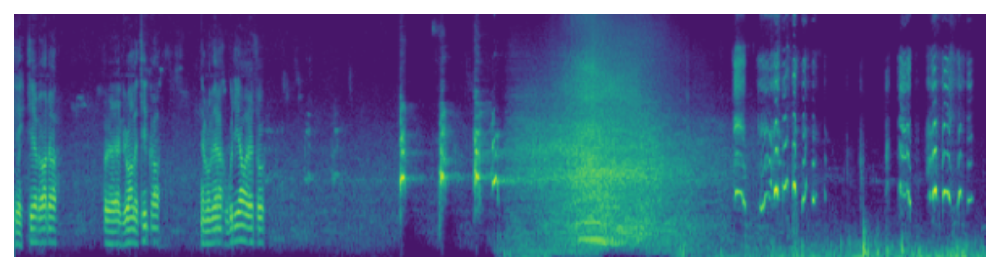

FreeAudio: Training-Free Timing Planning for Controllable Long-Form Text-to-Audio Generation
Anonymous Author(s)
Abstract
Text-to-audio (T2A) generation has achieved promising results with the recent progress of generative models. However, because of the limited quality and quantity of temporally-aligned audio-text data pairs, existing T2A methods usually face challenges when handling the complex text prompts that contain precise timing control, e.g., owl hooted at 2.4s–5.2s. Recent works have explored data augmentation techniques or taken timing conditions as model input to enable timing-conditioned 10-second T2A generation, while their synthesis quality is still limited. In this work, we propose a novel training-free timing-controlled T2A framework, FreeAudio, making the first attempt to enable timing-controlled long-form T2A generation, e.g., owl hooted at 2.4s–5.2s and crickets chirping at 0s–24s. Specifically, we first employ LLM for a timing-to-window planning, decomposing the text prompts with complex timing control into multiple time windows of varying lengths. Then we introduce: 1) decoupling and aggregating attention control for precise timing control capabilities; 2) contextual latent composition and reference guidance for coherent long-form generation capabilities, respectively. Extensive experiments show that: 1) FreeAudio achieves a new record of timing-conditioned T2A synthesis quality among training-free methods and is comparable to state-of-the-art training-based method; 2) FreeAudio demonstrates comparable long-form generation quality with training-based Stable Audio and paves the way for timing-controlled long-form T2A synthesis. Our demo samples can be visited at: https://freeaudio.github.io/FreeAudio/.
Contribution

Figure 1: Left: LLM Planning. Right: Timing-Controlled Generation with Proposed Decoupling and Aggregating Attention Control.
Timing-controlled Long-Form Audio Generation
Example
| Birds chirp in the background as a man speaks, followed by a dog barking. Later, a car speeds by, and a child laughs in the distance. | ||
|  |
| Cat gently meowing and purring in long intervels. | Peaceful and calming ambient music with singing bowl and other instruments. | Nature environmental noise with various bird vocalization, high fidelity, children playing far away and light wind. |
Acoustic Environment Control:
| A man is speaking in a huge room. | A man is speaking in a small room. | A man is speaking in a studio. |
Material Control:
| Chopping tomatos on a wooden table. | Chopping meat on a wooden table. | Chopping potatos on a metal table. |
Pitch Control:
| Sine wave with low pitch. | Sine wave with medium pitch. | Sine wave with high pitch. |
Temporal Order Control:
| A racing car is passing by and disappear. | A female is speaking followed by footstep sound. | Wooden table tapping sound followed by water pouring sound. |
Label-to-Audio Generation:
| A capella | Babbling | Burping, eructation |
| Eruption | Gasp | Fart |
Unconditional Generation:
| "Null" |
TTA Generation with ChatGPT Text Prompt
Short Samples:
| Human Question to ChatGPT | Simplified ChatGPT Answer | AudioLDM |
|---|---|---|
| Describe the sound of the battlefiled | Battlefield scene, continuous roar of artillery and gunfire, high fidelity, the sharp crack of bullets, the thundering explosions of bombs, and the screams of wounded soldiers. | |
| Describe what does a pop music sound | Pop music that upbeat, catchy, and easy to listen, high fidelity, with simple melodies, electronic instruments and polished production. | |
| Describe the sound of the ocean | The steady crashing of waves against the shore,high fidelity, the whooshing sound of water receding back into the ocean, the sound of seagulls and other coastal birds, and the distant sound of ships or boats. |
Long Samples:
| Human Question to ChatGPT | Simplified ChatGPT Answer | AudioLDM |
|---|---|---|
| Describe the sound of the outer space | Radio emissions from stars, planets, galaxies and other celestial bodies, high fidelity, as well as the sounds of solar winds and cosmic rays. | |
| Describe what does a dance music sound with at most 30 words | Dance music with strong, upbeat tempo, and repetitive rhythms, include sub-genres like house, techno, EDM, trance, and many more. | |
| Describe the sound of the factory | Loud and chaotic. Hum and buzz of machinery such as power tools, high fidelity. Clanking and clattering of metal parts, the whirring of motors and engines, and the beeping and alarms of various instruments. | |
| Describe what does a scary music sound with at most 30 words | Scary music with dissonant harmonies, irregular rhythms, and unconventional use of instruments. |
Text-Guided Audio Style Transfer
| From drum beats to ambient music. | From trumpet to children singing. | From sheep vocalization to narration, monologue. |
|---|---|---|

|
 |
 |
Text-Guided Audio Inpainting with Original Text Prompt
| Unprocessed | Inpainting result | Ground-Truth |
|---|---|---|
 |
 |
 |
 |
 |
 |
 |
 |
 |
Text-Guided Audio Inpainting with Diverse Text Prompt
| Unprocessed | Ground-Truth | A cat is meowing. |
|---|---|---|
|
|
 |
| Ambient music | A man is speaking with bird calls in the background | Raining with wind blowing. |
 |
 |
 |
Text-Guided Audio Super-Resolution
The following three rows show unprocessed audio, super resolution result, and Groud truth audio, respectively.
| Violin | Baby Crying | Female Speech |
|---|---|---|
 |
 |
 |
 |
 |
 |
 |
 |
 |
| Label to sound generation | Generate music with: "A music is made by []". |
|---|---|
Other comments
1. We share our code for model evaluation on github, which aims to unify audio generation model evaluation for easier comparison.
2. We are confirming the data-related copyright issue, after which the pretrained models will be released.